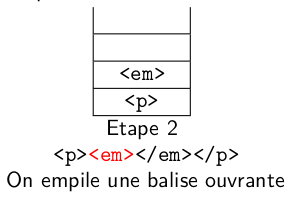

22-NSIJ1ME1 : Corrigé
Année : 2022
Centre : Métropole
Jour : 1
Enoncé :
Exercice 1 : structures de données
Partie A
-
Cette phrase décrit le comportement d'une file. En effet, dans une file, le premier élément entré est aussi le premier sorti. Dans une pile par contre le premier entré sera le dernier à sortir.
-
La variable
controleuraugmente de 1 lorsqu'on rencontre une parenthèse ouvrante et diminue de 1 lorsqu'on rencontre une parenthèse fermante par conséquent :- pour
B=((()()les valeurs successives seront : \(1, 2, 3, 2, 3, 2\) - pour
C=(()))(les valeurs successives seront : \(1, 2, 1, 0, -1, 0\)
- pour
-
Le test 1 :
L'exemple de l'expressionif controleur < 0Cillustre ce cas de figure, l'expression est mal parenthésée car le controleur devient négatifLe test 2 :
L'exemple de l'expressionif controleur == 0Billustre ce cas de figure, l'expression est mal parenthésée car le controleur est non nul après avoir parcouru toute l'expressionAttention
Dans les 4 dernières lignes du code proposé dans l'exercice, on teste si un booléen est vrai et dans ce cas on renvoie vrai et faux sinon :
Ce qui revient à renvoyer ce booléen, ces quatre lignes se résument donc :if controleur == 0 : # return True #le parenthésage est correct else: return False #parenthèse(s) fermante(s) manquante(s)return controleur == 0Partie B
4. a.




b. Si la pile est vide en fin de parcours alors le balisage est correct.
c. Puisque l'expression est correctement balisée, il y autant de balises ouvrantes que de balises fermantes (6 de chaque). Puisqu'on empile les balises ouvrantes, la pile contiendra au maximum 6 éléments.
Exercice 2 : bases de données
-
a. Cette requête renvoie les champs
nom,prenometnaissancede la relationindividulorsque le nom est'Crog'. Sur l'extrait de la table, on obtient donc :'Crog', 'Daniel', '07-07-1968'.Attention
Le sujet présente des extraits des relations
individuetrealisation, on ne sait pas s'il faut fournir le résultat des requêtes sur ces extraits uniquement ou de façon générale. Dans la réponse précédente, on donne les deux.b.
SELECT titre, id_rea FROM realisation WHERE annee > 2020; -
a. C'est la requête 1 qu'il faut utiliser, elle met à jour la table. La requête 2 ne fonctionne pas car elle insère un nouvel enregistrement, or
id_indest une clé primaire donc unique. On ne peut donc pas insérer un nouvel enregistrement ayant pourid_intla valeur688.b. Pour la relation
individula clé primaire estid_indles autres valeurs acceptent donc des doublons (pas de contrainteUNIQUE) et on peut donc avoir deux individus ayant même nom, prénom et date de naissance. -
a.
INSERT INTO emploi VALUES (5400, 'Acteur(James Bond)', 688, 105); -- (1)688est l'id_indde Daniel Crog et 105 l'id_reade "Casino Imperial".
INSERT INTO emploi VALUES (5401, 'Acteur(James Bond)', 688, 325); -- (1)688est l'id_indde Daniel Crog et 325 l'id_reade "Ciel tombant".
b. On doit d'abord créer l'enregistrement du film dans la relation
realisation, carid_reaétant une clé étrangère de la relationemploi, on ne peut pas créer un enregistrement dansemploisi sonid_reane figure pas dansrealisation. -
a.
SELECT individu.nom, realisation.titre, realisation.annee FROM emploi JOIN individu ON individu.id_ind = emploi.id_ind JOIN realisation ON realisation.id_rea = emploi.id_rea WHERE emploi.description = 'Acteur(James Bond)';b.
SELECT emploi.description FROM emploi JOIN individu ON individu.id_ind = emploi.id_ind WHERE individu.prenom = "Denis" and individu.nom = "Johnson"
Exercice 3 : représentations binaires et protocoles de routage
-
a.
\(\overset{\displaystyle{_{2^7}}}{\boxed{\strut1}}\overset{\displaystyle{_{2^6}}}{\boxed{\strut1}}\overset{\displaystyle{_{2^5}}}{\boxed{\strut0}}\overset{\displaystyle{_{2^4}}}{\boxed{\strut0}}\overset{\displaystyle{_{2^3}}}{\boxed{\strut0}}\overset{\displaystyle{_{2^2}}}{\boxed{\strut0}}\overset{\displaystyle{_{2^1}}}{\boxed{\strut0}}\overset{\displaystyle{_{2^0}}}{\boxed{\strut0}}\) \(= 128 + 64 = 192\)
\(\overset{\displaystyle{_{2^7}}}{\boxed{\strut1}}\overset{\displaystyle{_{2^6}}}{\boxed{\strut0}}\overset{\displaystyle{_{2^5}}}{\boxed{\strut1}}\overset{\displaystyle{_{2^4}}}{\boxed{\strut0}}\overset{\displaystyle{_{2^3}}}{\boxed{\strut1}}\overset{\displaystyle{_{2^2}}}{\boxed{\strut0}}\overset{\displaystyle{_{2^1}}}{\boxed{\strut0}}\overset{\displaystyle{_{2^0}}}{\boxed{\strut0}}\) \(= 128 + 32 + 8 = 168\)
\(\overset{\displaystyle{_{2^7}}}{\boxed{\strut1}}\overset{\displaystyle{_{2^6}}}{\boxed{\strut0}}\overset{\displaystyle{_{2^5}}}{\boxed{\strut0}}\overset{\displaystyle{_{2^4}}}{\boxed{\strut0}}\overset{\displaystyle{_{2^3}}}{\boxed{\strut0}}\overset{\displaystyle{_{2^2}}}{\boxed{\strut0}}\overset{\displaystyle{_{2^1}}}{\boxed{\strut0}}\overset{\displaystyle{_{2^0}}}{\boxed{\strut0}}\) \(= 128\)
\(\overset{\displaystyle{_{2^7}}}{\boxed{\strut1}}\overset{\displaystyle{_{2^6}}}{\boxed{\strut0}}\overset{\displaystyle{_{2^5}}}{\boxed{\strut0}}\overset{\displaystyle{_{2^4}}}{\boxed{\strut0}}\overset{\displaystyle{_{2^3}}}{\boxed{\strut0}}\overset{\displaystyle{_{2^2}}}{\boxed{\strut0}}\overset{\displaystyle{_{2^1}}}{\boxed{\strut1}}\overset{\displaystyle{_{2^0}}}{\boxed{\strut1}}\) \(= 128 + 2 + 1 = 131\)
L'écriture décimale de cette adresse ipv4 est donc \(192.168.128.131\) b. Le dernier octet a 256 valeurs possibles (de 0 à 255), le nombre d'adresses différentes possibles du réseau A est donc 256.Attention
Deux adresses sont réservées dans un réseau : une pour le réseau lui-même et l'autre pour la diffusion (broadcast). Donc parmi les 256 possibilités, 254 peuvent être attribuées à un hôte du réseau.
-
a. Le routeur A est directement relié à B, C et D (métrique 1)
b.
graph LR A(("A")) B(("B")) C(("C")) D(("D")) E(("E")) A --- B & C & D B --- D C --- D D --- E -
a. Le chemin emprunté sera F - H - J - K - I pour un coût de 13. Les autres chemins ont un coût supérieur et dans le protocole ospf on minimise le coût (et pas le nombre de routeurs traversés comme dans le protocole rip)
b.
Destination Métrique F 0 G 8 H 5 I 13 J 6 K 8 L 11 c. Une panne du routeur H, en effet dans ce cas :
- pour transmettre de I à F le chemin serait I - K - J - G - F (coût minimal de 19),
- pour transmettre de K à F le chemin serait K - J - G - F (coût minimal de 14),
- pour transmettre de J à F le chemin serait J - G - F (coût minimal de 12)
- pour transmettre de L à F le chemin serait L - G - F (coût minimal de 20)
Dans tous les cas, on transite bien par G.
Exercice 4 : parcours des arbres binaires, diviser pour régner, récursivité
Partie A : Parcours d'un arbre
-
La somme de l'arbre précédent est \(32\) : \(3+6+2+7+4+9+1\)
-
Les réponses sont regroupées dans le tableau ci-dessous :
Lettre Noms A Racine B Noeud C Feuille D sag E sad -
Le parcours en largeur correspond au parcours de haut en bas et de gauche en droite c'est à dire à la proposition C : 3-6-2-7-4-9-1
-
def somme(nombres): s = 0 for n in nombres: s += n return sRemarques
On peut aussi penser à utiliser
sum -
C'est un parcours en largeur, en effet les noeuds sont placés dans une file, ils sont donc traités dans leur ordre d'arrivée.
Partie B : Méthode 'diviser pour régner'
-
C'est la proposition D : diviser un problème en deux problèmes plus petits et indépendants.
Attention
- on peut diviser en plus de deux sous problèmes
- la méthode inclus normalement une phase où on combine les solutions des sous problèmes afin d'obtenir celle du problème initial.
-
somme(Arbre) = valeur de la racine + somme(SAG) + somme(SAD)
-
def calcul_somme(arbre): if est_vide(arbre): return 0 else: return valeur_racine(arbre) + somme(arbre_gauche(arbre)) + somme(arbre_droit(arbre))
Exercice 5 : programmation orientée objet
-
C'est l'instruction 3 :
joueur1 = Joueur("Sniper",319,"A") -
a.
def redevenir_actif(self): if not self.est_actif: self.est_actif = Trueb.
def nb_de_tirs_recus(self): return len(liste_id_tirs_recus) -
a. C'est le test 1 qui vérifie que l'équipe du participant est bien celle de la base.
b. A la ligne 5, on constate que lorsqu'un joueur a été touché par le tir d'un coéquipier, le score de l'équipe diminue de 20.
-
if participant.est_determine(): # (1) self.incremente_score(40)- Dans la classe
Joueurdonnée en début d'exercice on trouve la méthodeest_determine
- Dans la classe